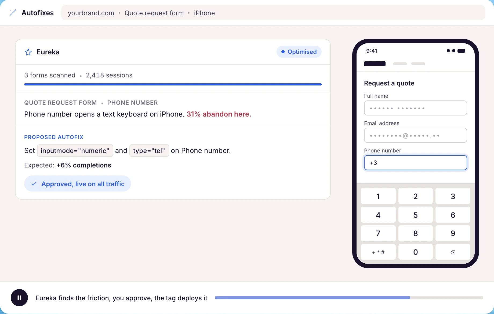

Autofixes
The optimal mobile keyboard
Mobile keyboard
Different input fields need different mobile keyboards. The right one makes filling in the field smooth.
Keyboard example
Numeric, with a plus sign, for a telephone field.
Campaign objective
Help visitors avoid extra taps and errors.

© 2026 Exatom B.V.
17